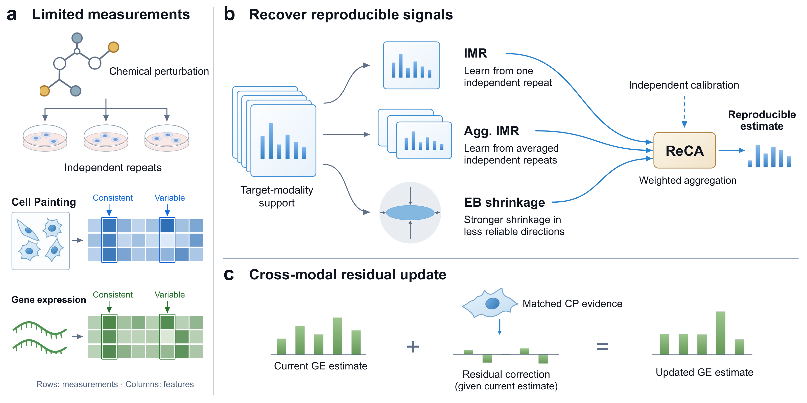

Recover repeatable signals
Use ReCA to combine multiple independent-repeat estimators into a calibrated response profile. Unreliable feature directions can be downweighted rather than blindly preserved.
Observed repeat profiles→Estimated response
REPERT / EXPERIMENTAL EVIDENCE
What can we trust when the same cellular perturbation produces different measurements?
RePert uses independent experimental repeats to construct more reproducible perturbation-response estimates, then studies when matched Cell Painting and gene-expression measurements provide additional information.

A drug tested at a fixed dose may produce different feature profiles across independent plates. Averaging can reduce noise, but with only a few repeats it remains difficult to distinguish a compound-specific response from experimental variation.
Combine learned repeat recovery with statistical shrinkage and independent calibration.
Check whether the estimate better agrees with a held-out repeat—and still distinguishes other compounds.
What RePert predicts here: a more reliable high-dimensional response profile for an already measured perturbation—not a new drug identity or a therapeutic recommendation.
RePert connects response estimation, complementary cross-modal information, and downstream prediction. Each stage asks a different scientific question instead of treating measurement recovery and biological utility as the same thing.
Use ReCA to combine multiple independent-repeat estimators into a calibrated response profile. Unreliable feature directions can be downweighted rather than blindly preserved.
Ask whether CP or GE contributes information beyond the existing estimate. Compare correct compound pairing against shuffled and matched-foreign evidence.
Examine the recovered morphology, dose-response patterns, and supervised perturbation prediction. Improvements in repeat agreement need not carry over to every task.
Learn to recover an independent held-out measurement from available support measurements.
Train using aggregate targets from acquisition plates excluded from the input support.
Use repeat-derived signal and noise covariance for empirical-Bayes shrinkage.
Combine the estimates using nonnegative weights calibrated against independent validation measurements.
The primary evidence compares estimated responses with held-out measurements of the same perturbation, while controlling for agreement with different compounds. The aim is perturbation-specific reproducibility—not correlation inflated by shared background.
From one to three independent support measurements, ReCA yields higher E than the raw support mean in the frozen benchmark.
What is E? Same-compound minus matched-foreign Fisher-z agreement; larger values indicate stronger perturbation specificity.
Inspect frozen Figure 2 values+0.0317 E gain · 3,149 compounds
Comparison uses the eligible compound subset for each support budget. Corresponding same-compound retrieval results are available in the source data ↗.
Correctly paired CP and GE can improve independent-repeat agreement beyond the current estimate. The additional information depends on what is already observed.
Cross-modal evidence ↗Morphological recovery improves in reported analyses, but MoA/target/pathway retrieval and direct transfer across cell lines do not show uniform benefits.
Downstream boundaries ↗The analyses span matched image- and expression-based perturbation readouts and independent cellular contexts. Each dataset follows its own processing and repeat-matching protocol.
U2OS
Matched image and expression readouts for studying repeat-aware estimation and conditional evidence.
A549
Additional independently acquired morphological profiles used in external repeat evaluations.
A549 · K562 · MCF7
Gene-expression pseudobulk responses for evaluating reproducibility and context transfer.
First, inspect Figure 1 to understand the scientific goal. Then run the bundled synthetic estimator example to see its inputs and outputs. Finally, trace the frozen figures to their numerical sources.
Read the scientific overview and original Figure 1 ↗.
Run the toy example: 32 fitting, 12 calibration and 5 query compounds, with 16 synthetic features.
Follow the figure-to-source mapping ↗ for experimental evidence.
git clone https://github.com/Zhao-weijing/RePert-code.git
cd RePert-code
python -m venv .venv
source .venv/bin/activate
python -m pip install numpy
python scripts/run_estimator_example.py
python scripts/verify_package.pyPython 3.10+ · No GPU or biological downloads. Outputs include outputs/example/result.json and predictions.csv. Example details ↗
Use these entry points to move from scientific questions to the relevant implementation and original frozen results. The documentation separates software demonstrations, figure reconstruction and full upstream experiments.
Newcomer-friendly project overview, quick start and directory navigation.
↗ 02 / METHODSRepeat estimators, calibration, cross-modal experiments and predictor supervision.
↗ 03 / RESULTSFrozen panel summaries and compound-level data for inspecting the reported results.
↗ 04 / REPRODUCEFigure/table commands, upstream dependencies, and known release limitations.
↗Reproduction scope. The public package includes a checked synthetic example and frozen-result figure reconstruction. Full upstream model-training reproduction remains unverified; processed bulk assay inputs and checkpoints are not all included. See release status ↗ and data access ↗.